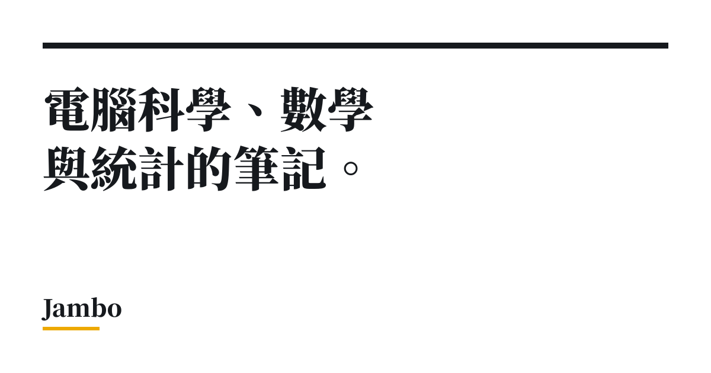

Jambo｜從網頁對話到 Coding Agent：給 R／Python 研究者的九篇實作入門

一句話摘要
這是一套少見地把 Coding Agent 放回研究與資料分析脈絡的繁中入門系列：先減少人工複製貼上，再逐步建立純文字、Git、規範檔、驗證與可重現計算的基本功；它不把 Agent 描述成可自動保證正確的黑盒，而是強調人必須保留驗收與權限判斷。
來源脈絡
Jambo Chen 於 2026-10-10 發布此九篇系列。原文說明以 Windows 操作為主，並以 Claude 為主要示例；不過其核心概念同樣適用於其他可在本機專案中讀檔、改檔與執行指令的 Coding Agent。
本次保存的來源頁可正常讀取，系列索引與九個分篇皆回應 HTTP 200。封面圖已本地保存；其原始 Open Graph 圖為 1200×630 PNG，SHA-256 為 c83705aa71bbd9ddab650e8786f9e565d4dcd71bd6286311ef386aa1a82836ac。
九篇內容地圖
- 離開網頁對話：比較網頁對話與本機 Coding Agent。後者可在選定資料夾內搜尋、讀取檔案、執行程式與查看輸出，減少把程式碼與結果反覆貼回聊天視窗的摩擦。
- LLM 與 Agent 的運作原理：解釋 token、context window、遺忘與編造；核心提醒是語句通順不等於結論正確，結果須以實際檔案、執行輸出或已知事實驗證。
- 寫 Prompt 與選模型：把產出格式、完成條件、可修改範圍與驗收方式寫明；不要把「是否動手」或「何時算完成」交給模型猜測。
- CSV、TeX 與 Markdown：主張資料與文件優先轉為結構清楚的純文字，降低 PDF、Word、Excel 或截圖在解析時的結構遺失與 token 成本。
- 規範檔與 Skill：用專案內的 AGENTS.md、CLAUDE.md 等保存可重複的慣例與限制；規範須短、具體，且不能取代權限提示與人工 review。
- 版本控制：用 Git commit 取代 final_v2、final_final 等人工副本；將 Agent 的多檔改動納入可檢視、可回退的歷史。
- 整理專案：一份工作一個資料夾、採相對路徑、記錄依賴與可重現方式，避免不同作業、資料與程式混在一起，也縮小 Agent 可見範圍。
- 高效計算：先用 profiler 找熱點，再考慮向量化、避免逐次擴增與平行化；並提醒亂數、記憶體、核心重複使用與平行寫檔等可重現性陷阱。
- 遷移至 VS Code：把編輯器、終端機、Agent 與 Git 檢視放在同一工作區，但不把 VS Code 當成必要前提；既有 RStudio 或桌面 App 仍可共用同一專案與提交歷史。
對研究與資料分析工作最有價值的觀念
- Agent 的價值不只是「幫你寫程式」，而是讓它在受控的專案範圍內讀取必要檔案、執行程式、取得輸出，再回報可檢查的結果。
- 先建立可檢查的完成定義。例如資料列數、主鍵唯一性、已知樣本的計算結果、測試通過與否；沒有驗收條件時，Agent 容易在「看起來完成」時就停下。
- 純文字優先不只省 token，更讓 diff、搜尋、版本控制與逐行 review 成為可能。這不表示 PDF、Excel、圖片永遠不能用，而是重要結構資料應盡量提供可讀的原始形式。
- 規範檔是 context，不是強制執行機制。即使文件寫著「原始資料不可修改」，也應在寫入、刪除、搬移、網路操作等高影響行為前查看 diff 與權限提示。
- 平行化不是預設答案。先量測、先優化真正的熱點，並以固定亂數種子、循序版對照與獨立輸出路徑驗證結果。
可直接採用的最小導入順序
- 為一份實際研究或分析建立獨立資料夾；先不要一次把所有桌面、下載檔案交給 Agent。
- 保留原始資料唯讀，將清理後資料、圖表與暫存結果放進明確子資料夾。
- 要求 Agent 先盤點檔案與提出計畫；涉及搬移、覆寫、安裝套件或送出網路請求時，改成逐步核准。
- 建立短小的 AGENTS.md 或 CLAUDE.md，記下資料不可覆寫、輸出位置、慣用套件、測試與回覆語言等固定規則。
- 每個可驗收的階段建立 Git commit，commit 前檢查 diff；不要只依賴聊天工具的暫時 checkpoint。
- 遇到效能問題先要求 profiler 報告與基準時間，再決定是否改寫或平行化。
與官方文件的交叉查核
原系列對 AGENTS.md、CLAUDE.md 與 Prompt 實作的觀點，連結了 OpenAI、Anthropic、VS Code、Git、NumPy 等一手或專案官方文件。AI 學習雷達特別確認：OpenAI Codex 有 AGENTS.md 指南，Anthropic Claude Code 也有專案記憶／指示文件；但實際支援範圍、檔案載入優先序、方案、UI 與各平台功能會隨版本變動，導入前仍應以當下官方文件及本機工具行為為準。
導入時的安全邊界
- 不要因為 Agent 可讀檔就開放整個家目錄、雲端同步資料夾、SSH 金鑰或含憑證的設定檔；從單一無敏感資料的測試專案開始。
- 不要將「Agent 已執行」等同於「分析正確」。保留資料品質檢查、單元測試、結果抽查與領域判斷。
- 安裝 VS Code 擴充套件、Skill 或第三方腳本前，核對發行者、來源、權限與授權；名稱相近不表示可信。
- Git commit 可以回復專案檔案，但不會自動撤銷外部 API 呼叫、資料庫寫入、寄信、雲端部署或已推送的敏感內容。
原始連結
- 系列索引：https://jambochen.github.io/blog/coding-agent/
- 第 1 篇：https://jambochen.github.io/blog/coding-agent/leaving-web-chat/
- 第 2 篇：https://jambochen.github.io/blog/coding-agent/how-llms-work/
- 第 3 篇：https://jambochen.github.io/blog/coding-agent/prompting-and-models/
- 第 4 篇：https://jambochen.github.io/blog/coding-agent/plain-text-workflow/
- 第 5 篇：https://jambochen.github.io/blog/coding-agent/rules-file-and-skills/
- 第 6 篇：https://jambochen.github.io/blog/coding-agent/git-checkpoints/
- 第 7 篇：https://jambochen.github.io/blog/coding-agent/organizing-a-project/
- 第 8 篇：https://jambochen.github.io/blog/coding-agent/efficient-computing/
- 第 9 篇：https://jambochen.github.io/blog/coding-agent/moving-to-vscode/
- OpenAI AGENTS.md 指南：https://developers.openai.com/codex/guides/agents-md
- Anthropic Claude Code memory：https://code.claude.com/docs/en/memory
- 本文擷取紀錄：source-archive/2026-10-19-jambo-coding-agent-series.json